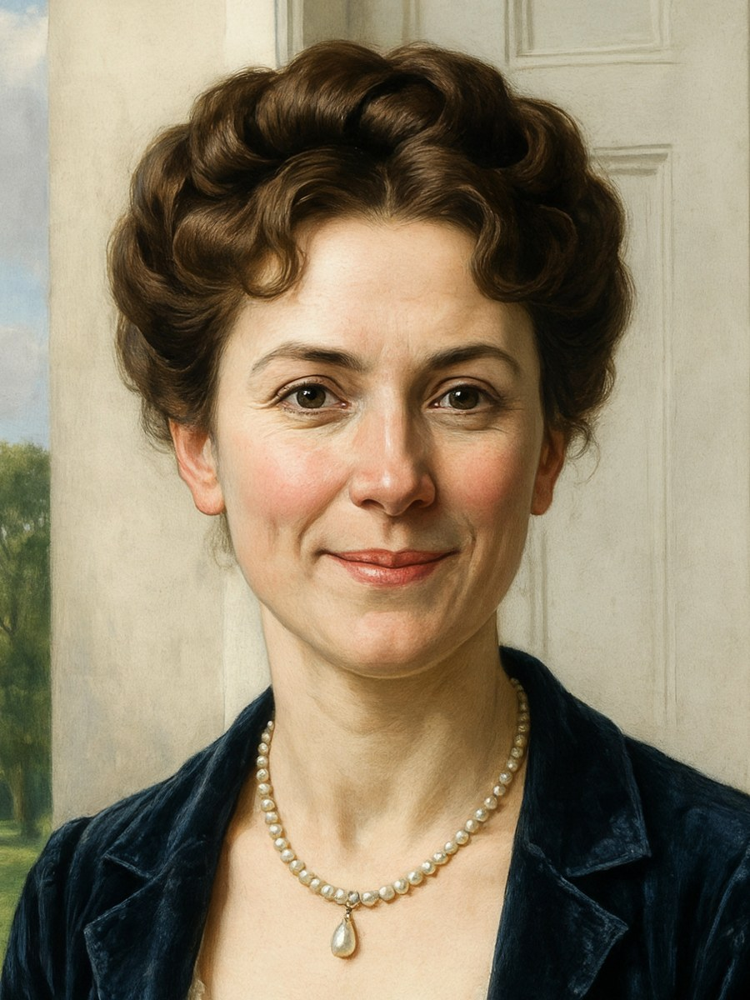

Lea Meadows believes the best stories are the ones you can curl up with, a pot of tea steeping nearby. Raised on Pride and Prejudice, Persuasion, and the generous kindness of the JAFF community, she writes gentle, character-first variations for readers who love a long walk, a witty letter, and a happy ending that feels earned.
Her stories live in a quiet lane of their own: Austen’s comedy of manners taken seriously as moral art. No scandal, no rescue — only the harder proof of character. Her people are given room to prove themselves, and the secondary cast — Kitty, Georgiana, Anne de Bourgh — are granted arcs of their own.
She is currently writing The Smaller Proofs Collection: By Smaller Proofs, a no-elopement variation set across a Derbyshire summer; and the sequels A Proper Bloom and A Proper Choice, which follow Anne de Bourgh as she discovers a life of her own.
Gentle concrit and kind words are both warmly welcomed — she reads every letter.
New chapters, publication news, and the occasional note from the writing desk.
No spam. Just story news, publication updates, and the occasional note from the writing desk.